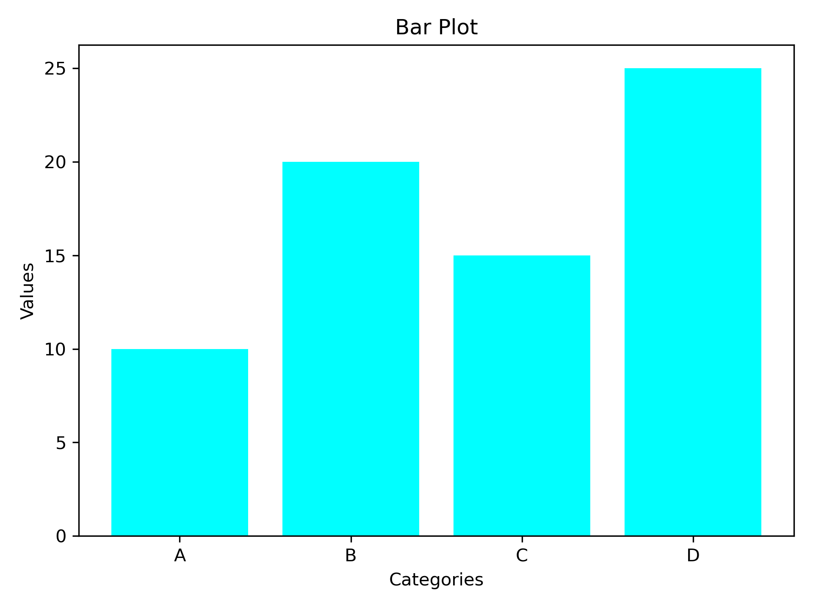
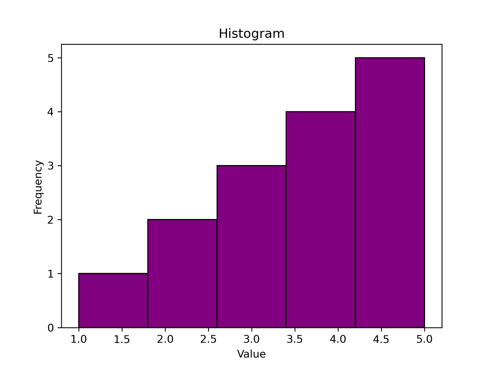

THE PERSONAL DATA SCIENCE LAB
Small experiments.
Big understanding.
Go from your first Python collection to your first fitted model. Explore the ideas, read the code, and make the math move.
# A little curiosity goes a long way. import numpy as np import matplotlib.pyplot as plt x = np.arange(6) y = 2 * x + 1 plt.plot(x, y)
01 / THE LEARNING PATH
Build one idea at a time.
Focused examples inspired by the original notebook collection.
0 of 8 lessons completed
No matching lessons. Try a different search or topic.
02 / MAKE THE MATH MOVE
Your first model, in motion.
Adjust the data. Fit a line. See what changes.
Shape your experiment
Illustrative, deterministic data. Calculations run in your browser.
The fitted line minimizes squared residuals. More noise usually makes the relationship less predictable.
Training metrics describe these generated points, not performance on unseen data.
03 / FROM THE NOTEBOOKS
Turn numbers into a story.
Original Matplotlib exports from the learning workspace.



KEEP YOUR CURIOSITY RUNNING
Your next insight starts
with a small experiment.
Explore the source, try a lesson, and build on what you learn.
Explore the repository ↗